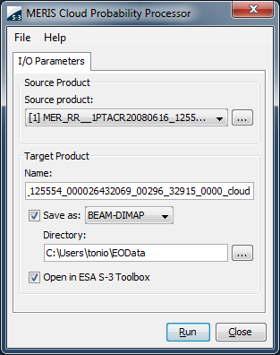
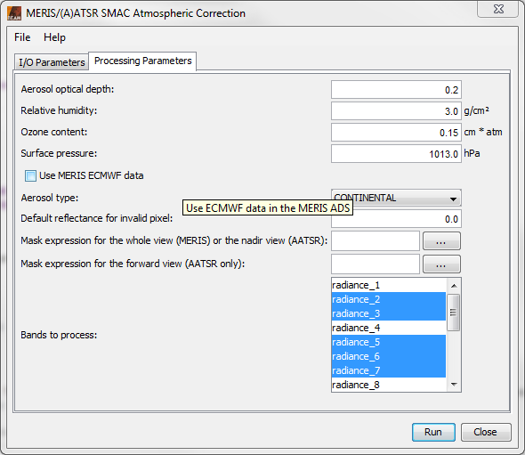

| SMAC - Processor Description |
|
Please note: The chapter BEAM Scientific Data Processors provides a general description for all BEAM data processors. It describes the common graphical user interface (GUI), the command-line interface and the common processing request file format.

 to invoke a
standard file dialog. to invoke a
standard file dialog.
to invoke a
standard file dialog. to invoke a
standard file dialog. 
The following table describes the SMAC specific processing request file contents. For a detailed description of the processing request file concept and file specification please look at chapter Processing Request Files.
| Parameter name | Description | Type | Valueset |
|---|---|---|---|
| type | Request type. Mandatory attribute of the Request element |
String | "SMAC" |
| prod_type | Input product type. | String | "MER_FR__1P", "MER_RR__1P" or "ATS_TOA_1P" |
| bands | Comma separated list of band names to be processed. | String | Product specific. |
| aero_type | Aerosol type. | String | "Desert" or "Continental" |
| tau_aero_550 | Aerosol optical depth at 550 nm.. | Float | 0.0 - 1.0 |
| useMerisADS | Whether to use the MERIS ECMWF data or not. | Boolean | "true" or "false" |
| surf_press | Surface pressure in hPa. | Float | 100.0 - 1100.0 |
| u_o3 | Ozone content in cm*atm. | Float | 0.0 - 1.0 |
| u_h2o | Water vapour content in g/cm^2 | Float | 0.0 - 7.0 |
| Bitmask | Bitmask expression to be evaluated during processing. | Bitmask | - |
| invalid | Invalid pixel value. | Float | >= 0.0 |